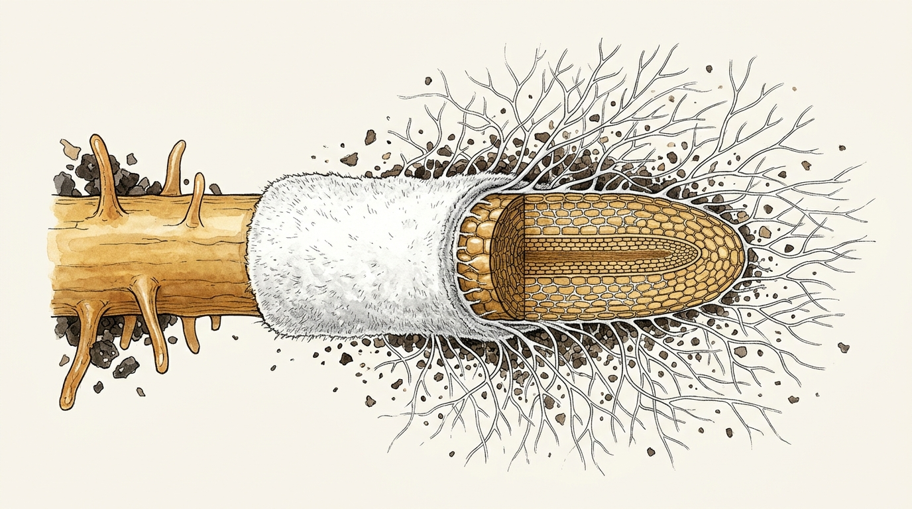

Every fungus has to get food from somewhere else. Where it gets that food sorts fungi into three lifestyles—and decides whether you could ever grow one in your kitchen.
Warm-up from lesson 1
Three ways to eat
The mycelium always feeds the same way—digest outside, then absorb. What changes is what it feeds on. OpenStax §24.3
Decomposereats dead stuff
Mycorrhizal partnerfungo micorrizicotrades with living roots
Parasitetakes from a living host
Decomposers (biologists say saprobes(saprofiti / saprotrofi)) feed on dead organic matter, mostly plant material. Their enzymes can break down even the cellulose and lignin of dead wood. Most fungi live this way, and they recycle nutrients for everything else in the forest. OpenStax §24.1
Mycorrhizal partners(funghi micorrizici) wrap around or grow into living plant roots. This partnership is a mycorrhiza (micorriza). The mycelium pulls water and minerals from the soil into the plant; the plant pays back in sugars from photosynthesis. Nearly 90% of vascular plants have such a partner. OpenStax §24.3

Bare root (left)Thick root hairs reach only nearby soil
Mycorrhizal root tip (right)White hyphal mantle sends fine threads far wider
Why trees trade with fungi: fungal hyphae are far finer than tree roots, wrapping the root tip in a sheath and multiplying its reach for water and minerals.
Parasites feed on living hosts and harm them: Dutch elm disease (grafiosi dell'olmo) kills elms, some shelf fungi (funghi a mensola) kill living trees, and athlete's foot (piede d'atleta) is a fungus on you. OpenStax §24.3
To grow a fungus at home you must feed its mycelium. A decomposer is easy: give it what it eats. The oyster mushroom (orecchione / pleurotus) (Pleurotus ostreatus) is a wood decomposer and is grown commercially everywhere. Wikipedia Shiitake is grown on cut oak (quercia) logs. Cornell
A mycorrhizal fungus needs a living tree as its trading partner. That is why porcini (Boletus edulis), which partners with tree roots, is sold at a premium yet remains "very difficult to cultivate." Wikipedia You can't fake a living pine in a plastic tub.
Quick check
Did the big idea land? Pick the best answer.
Think it through
Now apply it. Situations, not definitions—reason from what each fungus needs to eat.
Puzzle to chew on
Fly agaric (ovolaccio, Amanita muscaria) is usually found growing near trees, such as pine, rather than in the middle of an open meadow. Why might that be? Think first, then open.
One explanation
It's mycorrhizal: its mycelium lives wrapped around those trees' roots and is fed sugar by them. No tree, no food, no mushroom. Where you find a mycorrhizal mushroom tells you which tree is feeding it. OpenStax §24.3 (Fig. 24.22 shows it on pine.)
Growing rule of thumb: if it eats dead stuff, you can probably feed it.